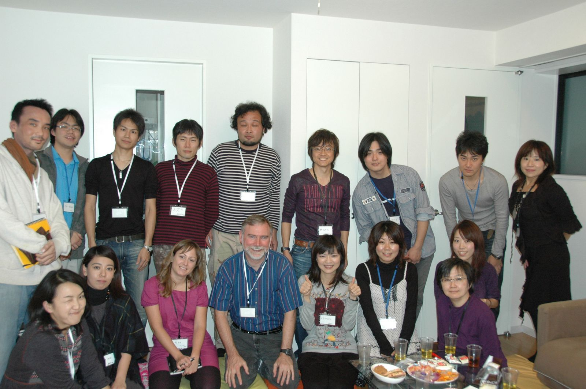

Let's交流館はオブラートに包まない本音の意見を言い合い、考え、行動する そして共に成長していく場。

INFORMATION
- 2010-11-14
-
第一回交流会開催します。日本語堪能な外国人の方を交えて、日本の日本人の今後を討論します。
- 2010-10-01
-
リアルな人と人との交流を求める場として「Let's交流館」が発足しました。>>Let's交流館とは
Let's交流館は人と人とのリアルなつながりを求める場として発足しました。異業種交流会とは一味違う。かといって政治活動や宗教的集まりではありません。現在の日本社会へ疑問を持ち何か自分も動かなければという問題意識のある方なら一度参加してみてください。
